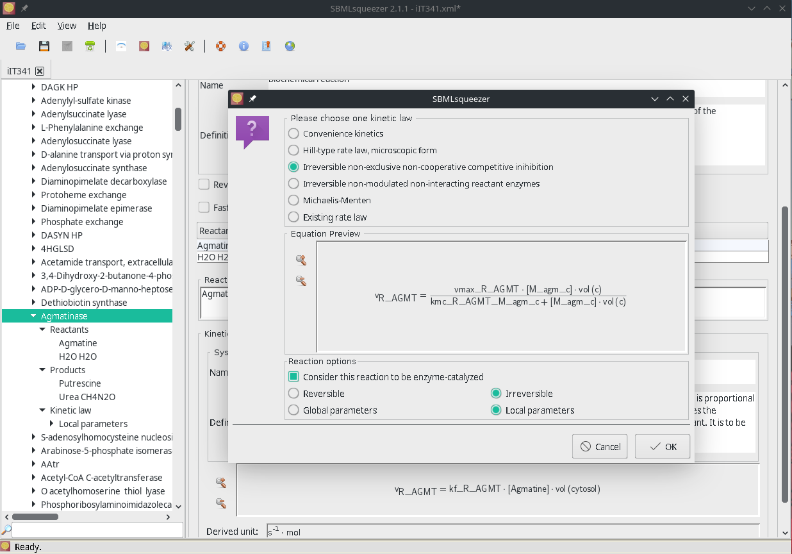

About
SBMLsqueezer generates kinetic equations for biochemical networks according to context of each reaction. When used as a plug-in for CellDesigner it uses the information from the SBGN representation of all network components. In the stand-alone mode, SBMLsqueezer evaluates the Systems Biology Ontology (SBO) annotations to extract this information. An online version of SBMLsqueezer is available that runs without instally any software on the local machine. The rate laws that can be produced by SBMLsqueezer include several types of generalized mass action; detailed and generalized enzyme kinetics, various types of Hill equations, S- and H-systems, and additive models for gene regulation. User defined settings specify which equation to apply for any type of reaction and how to ensure unit consistency of the model. Equations can be created using contextual menus. All newly created parameters are equipped with the derived unit and annotated with SBO terms if available and meaningful textual names. MathML is inserted directly into the SBML file. LaTeX or text export of ordinary differential equations is provided.
 Figure 1 | SBMLsqueezer reaction context menu on the model iIT341 of Helicobacter pylori 26695
Main program features
- Generates kinetic equations for all reactions in your model, or only for those reactions that are currently lacking a rate law with a large variety of generic and specific rate laws for several standard cases
- Allows you to create all rate laws in a reversible manner.
- Can detect reactive species, whose annotation indicates that these are genes.
- Can assume that all reactions in your network are enzymatically catalyzed and hence change the selection of rate laws.
- Defines the units of all species and compartments if necessary and derive the units for all newly created local and global parameters and numbers in order to ensure unit consistency of the entire model.
- Can check the model for global and local parameters as well as unit definitions that are never used and addressed. SBMLsqueezer can automatically remove these from the model.
- Imports experimentally determined rate equations from SABIO-RK and include them into your model.
- Equips your model with default values where no values are defined.
- Summarizes all features of the model in an exhaustive LaTeX-based model report
User’s guide and kinetic laws
| Document (pdf) | Size | Version |
|---|---|---|
| SBMLsqueezer 2.1 Users’ Guide | 4.2 MB | 2015-08-10 |
| SBMLsqueezer 2 Users’ Guide | 4.2 MB | 2014-06-29 |
| SBMLsqueezer 1 Users’ Guide | 960 kB | 2008-04-28 |
| Revised Kinetic Laws | 729 kB | 2010-03-31 |
| Kinetic Laws | 375 kB | 2008-04-28 |
Publications
- Andreas Dräger, Daniel C. Zielinski, Roland Keller, Matthias Rall, Johannes Eichner, Bernhard O. Palsson, and Andreas Zell. SBMLsqueezer 2: Context-sensitive creation of kinetic equations in biochemical networks. BMC Systems Biology, 9(1):1–17, September 2015. [ DOI | pdf ]
- Andreas Dräger. Computational Modeling of Biochemical Networks. PhD thesis, University of Tuebingen, Tübingen, Germany, January 2011. [ link ]
- Andreas Dräger, Adrian Schröder, and Andreas Zell. Systems Biology for Signaling Networks, volume 1 of Systems Biology, chapter Automating mathematical modeling of biochemical reaction networks, pages 159–205. Springer-Verlag, July 2010. [ DOI ]
- Andreas Dräger, Nadine Hassis, Jochen Supper, Adrian Schröder, and Andreas Zell. SBMLsqueezer: a CellDesigner plug-in to generate kinetic rate equations for biochemical networks. BMC Systems Biology, 2(1):39, April 2008. [ DOI | pdf ]
Poster and diploma theses
- Nadine Hassis (2007): Automatische Generierung kinetischer Gleichungen aus Stöchiometrien, Diplomarbeit, Universät Tübingen [ pdf ]
- Andreas Dräger, Nadine Hassis, Jochen Supper, Adrian Schröder, Andreas Zell (2007): SBMLsqueezer: a CellDesigner plug-in to generate kinetic rate equations for biochemical networks, poster (HepatoSys conference). [ pdf]
This project is promoted by:
| DFG | DZIF | BMBF |

|

|
|